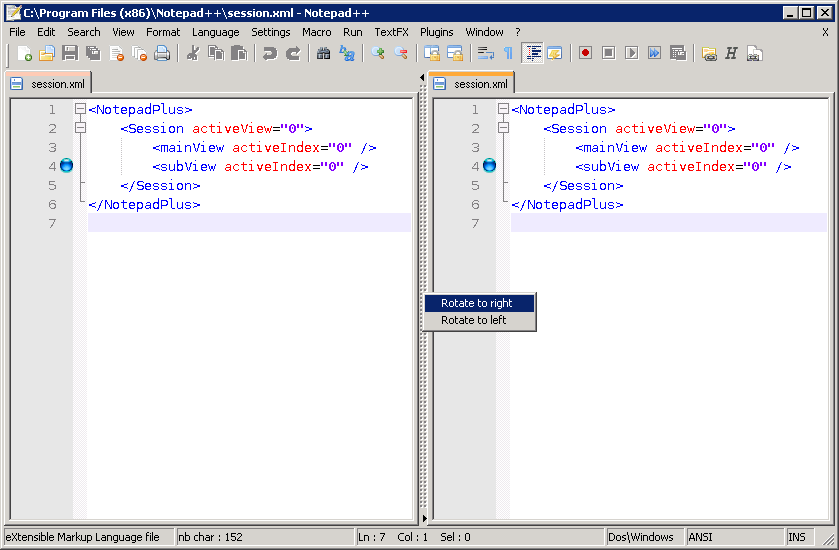

You can enable a secondary edit window in Notepad++ to be able to view two documents at the same time (possibly the same). If used with the same document, you can quickly compare two documents or make quick changes in two places at the same time without having to scroll or keep bookmarks.
To
use Multi View, first activate the document that you want to view in
the other view. Then, you have two options:
Select , this will move the document to the other view, closing
it in the first view.
Select
, this will clone the document into the
other view, linking the two. Any change in the first document will
automatically be forwarded to the second and vice versa. You can also
reach these command by right-clicking on the tab of a document and
selecting the command from the context menu.
Note that these options are also available by dragging a tab into an edit field, with the Ctrl depressed for cloning and not depressed for moving
Once you have Multi View enabled, you can control its layout. You can drag the divider around using your mouse, or click on the small arrows on the top and bottom to completely move it to the left or right. Rightclicking on the divider shows a popup menu allowing you to rotate the layout for a horizontal or vertical version.
Although you can view two documents at the same time, only one can be active (have the focus). You can determine the active view by the tabbar if you have the topline enabled (see Tab bar). By default, the active view has a darker color of orange than the inactive view. Also, only the active view can have the caret. You can switch the active view by selecting . The active view determines what options are available from the menu or toolbar. If the main view has all documents saved, but the secondary view has modified tabs, you can only select the Save option if the secondary view is active.
If you have the same document open in two views, they will share some properties, but some of them can be modified independently. These include:
If you open a new document or a file, it will do so in the currently active view. Additionally, closing the last document of a view will close that view if two views are visible (including moving the last document of one view to the other).
To ease document comparison/navigation, you can enable scroll locking in Multi View. When a lock is enabled, scrolling one view will automatically scroll the other. The lock will attempt to keep the current offset. This means if one view is scrolled 5 lines lower than the other, the vertical scroll lock will keep this distance unless this is not possible anymore. Is soon as it is possible it will retain the offset again.
To enable horizontal scroll locking, select or press the button.
To enable vertical scroll locking, select or press the button.